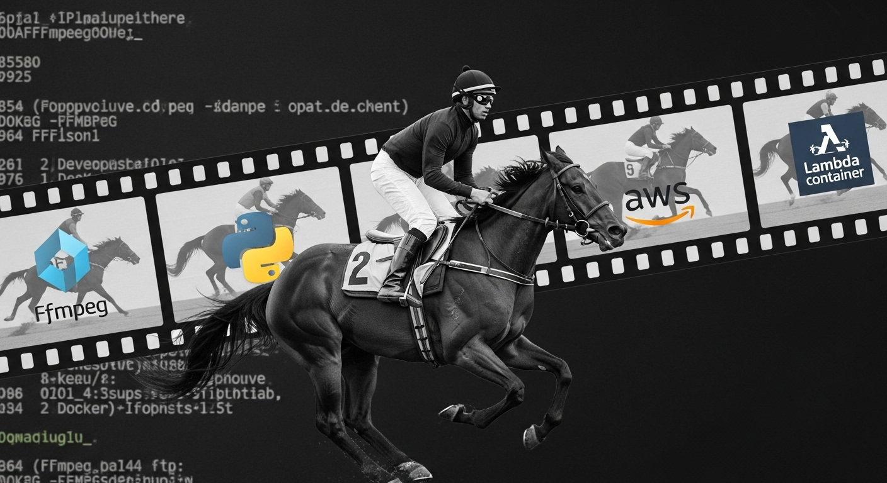
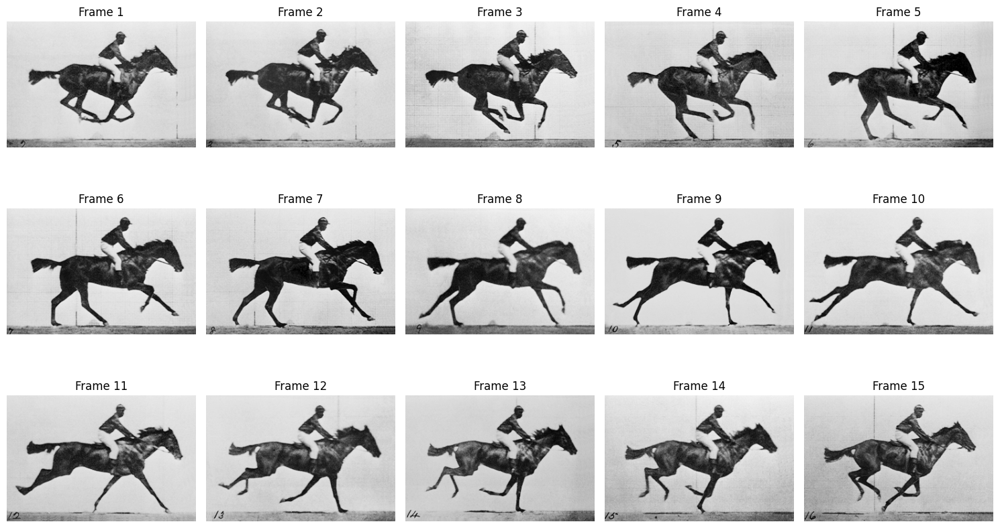

ffmpeg version 4.4.2-0ubuntu0.22.04.1 Copyright (c) 2000-2021 the FFmpeg developers
built with gcc 11 (Ubuntu 11.2.0-19ubuntu1)
configuration: --prefix=/usr --extra-version=0ubuntu0.22.04.1 --toolchain=hardened --libdir=/usr/lib/x86_64-linux-gnu --incdir=/usr/include/x86_64-linux-gnu --arch=amd64 --enable-gpl --disable-stripping --enable-gnutls --enable-ladspa --enable-libaom --enable-libass --enable-libbluray --enable-libbs2b --enable-libcaca --enable-libcdio --enable-libcodec2 --enable-libdav1d --enable-libflite --enable-libfontconfig --enable-libfreetype --enable-libfribidi --enable-libgme --enable-libgsm --enable-libjack --enable-libmp3lame --enable-libmysofa --enable-libopenjpeg --enable-libopenmpt --enable-libopus --enable-libpulse --enable-librabbitmq --enable-librubberband --enable-libshine --enable-libsnappy --enable-libsoxr --enable-libspeex --enable-libsrt --enable-libssh --enable-libtheora --enable-libtwolame --enable-libvidstab --enable-libvorbis --enable-libvpx --enable-libwebp --enable-libx265 --enable-libxml2 --enable-libxvid --enable-libzimg --enable-libzmq --enable-libzvbi --enable-lv2 --enable-omx --enable-openal --enable-opencl --enable-opengl --enable-sdl2 --enable-pocketsphinx --enable-librsvg --enable-libmfx --enable-libdc1394 --enable-libdrm --enable-libiec61883 --enable-chromaprint --enable-frei0r --enable-libx264 --enable-shared
libavutil 56. 70.100 / 56. 70.100
libavcodec 58.134.100 / 58.134.100
libavformat 58. 76.100 / 58. 76.100
libavdevice 58. 13.100 / 58. 13.100
libavfilter 7.110.100 / 7.110.100
libswscale 5. 9.100 / 5. 9.100
libswresample 3. 9.100 / 3. 9.100
libpostproc 55. 9.100 / 55. 9.100The Horse in Motion and FFmpeg Gotchas - Part 1
python
aws
A practical, hands-on guide to getting started with FFmpeg, covering image sequences, codecs, filters, and common gotchas in a real-world example.

Introduction
I recently worked on a project that involved images, videos, and audio—transforming and stitching them together into a cohesive experience. I started with MoviePy, but it turned out to be too slow for most of the heavy lifting. So I switched to FFmpeg and was immediately impressed by its speed. That said, working with FFmpeg came with its own set of challenges.
This post is the first in a series where I’ll walk through some of the gotchas I ran into while working with FFmpeg. The project itself involved taking real estate images and turning them into virtual property tours using generative AI. Each video also had embedded narration, giving the feel of a live guided tour. For the generative part, I used external services — RunwayML for generating video segments and OpenAI for voiceovers. FFmpeg was the glue that stitched everything together into a final polished video. The service was deployed as an API where users could upload property images, and I used AWS Lambda and Step Functions for code execution and orchestration.
To simulate some of the challenges I faced, I decided to recreate the famous “The Horse in Motion” video. Originally created by Eadweard Muybridge in 1878, it’s a landmark in the history of motion pictures and has been widely studied and referenced.
In this first part, we’ll create the video using Google Colab. We’ll start with still frames from the original motion study, convert them into a video, and overlay some text using FFmpeg’s drawtext filter. In upcoming posts, we’ll try running all of this within an AWS Lambda function—and work through the issues that pop up along the way.
Environment Details
You can access and run this Jupyter Notebook from the GitHub repository on this link: 2025-07-28-the-horse-in-motion-ffmpeg-gotchas-part-1.ipynb
This notebook was created and tested in Google Colab. The great thing about Google Colab is that it comes with FFmpeg pre-installed, so you can run the code without any additional setup. You can run it in any Jupyter environment, but you might need to install FFmpeg first.
Let’s start by checking the installed FFmpeg version.
We’ll also install and use the watermark library. It’s an IPython magic extension that’s incredibly useful for printing environment details like Python versions, library versions, and hardware information. It’s a great practice for reproducibility.
Python implementation: CPython
Python version : 3.11.13
IPython version : 7.34.0
watermark : 2.5.0
matplotlib: 3.10.0
PIL : 11.3.0
Compiler : GCC 11.4.0
OS : Linux
Release : 6.1.123+
Machine : x86_64
Processor : x86_64
CPU cores : 2
Architecture: 64bit
A Quick Intro to FFmpeg
Before we dive in, what exactly is FFmpeg ?
Think of FFmpeg as the Swiss Army knife for multimedia. It’s not a single program you click on, but a powerful command-line framework that can decode, encode, transcode, mux, demux, stream, filter, and play virtually any media format created. It’s the silent engine behind many famous applications like VLC, Plex, and even YouTube, which uses it for video processing.
Its power comes from its command-line nature. You string together a series of flags and options to tell it exactly what you want to do. This can feel intimidating at first, but once you grasp the basic pattern, you unlock a world of possibilities for automating video and audio manipulation.
Download the video frames
First, we need the raw materials: the individual frames of “The Horse in Motion.” I’ve hosted them on a public GitHub repository. The following Python code will create a directory called video_frames and download the 15 images into it.
import os
import requests
# Create the output directory if it doesn't exist
output_dir = "video_frames"
os.makedirs(output_dir, exist_ok=True)
# Base URL for the raw images
base_url = "https://raw.githubusercontent.com/hassaanbinaslam/myblog/5c15e72dde03112c5c8dea177bfed7c835aca399/posts/images/2025-07-28-the-horse-in-motion-ffmpeg-gotchas-part-1/video_frames"
# Download each frame
for i in range(1, 16):
frame_number = str(i).zfill(2) # Pad with zero if needed (e.g., 01, 02)
image_url = f"{base_url}/frame{frame_number}.png"
response = requests.get(image_url)
if response.status_code == 200:
with open(os.path.join(output_dir, f"frame{frame_number}.png"), "wb") as f:
f.write(response.content)
print(f"Downloaded frame{frame_number}.png")
else:
print(f"Failed to download frame{frame_number}.png")
print("\nListing downloaded files:")
!ls video_framesDownloaded frame01.png
Downloaded frame02.png
Downloaded frame03.png
Downloaded frame04.png
Downloaded frame05.png
Downloaded frame06.png
Downloaded frame07.png
Downloaded frame08.png
Downloaded frame09.png
Downloaded frame10.png
Downloaded frame11.png
Downloaded frame12.png
Downloaded frame13.png
Downloaded frame14.png
Downloaded frame15.png
Listing downloaded files:
frame01.png frame04.png frame07.png frame10.png frame13.png
frame02.png frame05.png frame08.png frame11.png frame14.png
frame03.png frame06.png frame09.png frame12.png frame15.pngBefore we stitch them into a video, let’s use matplotlib and Pillow to have a look at the frames we just downloaded. This helps confirm everything looks correct.
import os
import matplotlib.pyplot as plt
from PIL import Image
# Get the list of image files
image_files = sorted([os.path.join("video_frames", f) for f in os.listdir("video_frames") if f.endswith(".png")])
# Create a grid of subplots
fig, axes = plt.subplots(3, 5, figsize=(15, 9))
axes = axes.flatten()
# Display each image
for i, (img_path, ax) in enumerate(zip(image_files, axes)):
img = Image.open(img_path)
ax.imshow(img)
ax.set_title(f"Frame {i+1}")
ax.axis("off")
plt.tight_layout()
plt.show()
Creating the Video with FFmpeg
Now for the main event. We’ll use a single FFmpeg command to take our 15 separate png images and turn them into a looping mp4 video file with text overlaid.
!ffmpeg \
-stream_loop -1 -framerate 1.5 -i video_frames/frame%02d.png \
-vf "drawtext=fontfile=/usr/share/fonts/truetype/liberation/LiberationSans-Regular.ttf:text='The Horse in Motion and FFmpeg Gotchas':fontcolor=white:fontsize=14:box=1:boxcolor=black@0.8:boxborderw=5:x=(w-text_w)/2:y=(h-text_h)/2:enable='between(t,0,10)'" \
-c:v libx264 -r 30 -pix_fmt yuv420p -t 40 \
output_with_text.mp4ffmpeg version 4.4.2-0ubuntu0.22.04.1 Copyright (c) 2000-2021 the FFmpeg developers built with gcc 11 (Ubuntu 11.2.0-19ubuntu1) configuration: --prefix=/usr --extra-version=0ubuntu0.22.04.1 --toolchain=hardened --libdir=/usr/lib/x86_64-linux-gnu --incdir=/usr/include/x86_64-linux-gnu --arch=amd64 --enable-gpl --disable-stripping --enable-gnutls --enable-ladspa --enable-libaom --enable-libass --enable-libbluray --enable-libbs2b --enable-libcaca --enable-libcdio --enable-libcodec2 --enable-libdav1d --enable-libflite --enable-libfontconfig --enable-libfreetype --enable-libfribidi --enable-libgme --enable-libgsm --enable-libjack --enable-libmp3lame --enable-libmysofa --enable-libopenjpeg --enable-libopenmpt --enable-libopus --enable-libpulse --enable-librabbitmq --enable-librubberband --enable-libshine --enable-libsnappy --enable-libsoxr --enable-libspeex --enable-libsrt --enable-libssh --enable-libtheora --enable-libtwolame --enable-libvidstab --enable-libvorbis --enable-libvpx --enable-libwebp --enable-libx265 --enable-libxml2 --enable-libxvid --enable-libzimg --enable-libzmq --enable-libzvbi --enable-lv2 --enable-omx --enable-openal --enable-opencl --enable-opengl --enable-sdl2 --enable-pocketsphinx --enable-librsvg --enable-libmfx --enable-libdc1394 --enable-libdrm --enable-libiec61883 --enable-chromaprint --enable-frei0r --enable-libx264 --enable-shared libavutil 56. 70.100 / 56. 70.100 libavcodec 58.134.100 / 58.134.100 libavformat 58. 76.100 / 58. 76.100 libavdevice 58. 13.100 / 58. 13.100 libavfilter 7.110.100 / 7.110.100 libswscale 5. 9.100 / 5. 9.100 libswresample 3. 9.100 / 3. 9.100 libpostproc 55. 9.100 / 55. 9.100 Input #0, image2, from 'video_frames/frame%02d.png': Duration: 00:00:10.00, start: 0.000000, bitrate: N/A Stream #0:0: Video: png, rgba(pc), 300x200, 1.50 fps, 1.50 tbr, 1.50 tbn, 1.50 tbc Stream mapping: Stream #0:0 -> #0:0 (png (native) -> h264 (libx264)) Press [q] to stop, [?] for help [libx264 @ 0x575690e3ff40] using cpu capabilities: MMX2 SSE2Fast SSSE3 SSE4.2 AVX FMA3 BMI2 AVX2 [libx264 @ 0x575690e3ff40] profile High, level 1.3, 4:2:0, 8-bit [libx264 @ 0x575690e3ff40] 264 - core 163 r3060 5db6aa6 - H.264/MPEG-4 AVC codec - Copyleft 2003-2021 - http://www.videolan.org/x264.html - options: cabac=1 ref=3 deblock=1:0:0 analyse=0x3:0x113 me=hex subme=7 psy=1 psy_rd=1.00:0.00 mixed_ref=1 me_range=16 chroma_me=1 trellis=1 8x8dct=1 cqm=0 deadzone=21,11 fast_pskip=1 chroma_qp_offset=-2 threads=3 lookahead_threads=1 sliced_threads=0 nr=0 decimate=1 interlaced=0 bluray_compat=0 constrained_intra=0 bframes=3 b_pyramid=2 b_adapt=1 b_bias=0 direct=1 weightb=1 open_gop=0 weightp=2 keyint=250 keyint_min=25 scenecut=40 intra_refresh=0 rc_lookahead=40 rc=crf mbtree=1 crf=23.0 qcomp=0.60 qpmin=0 qpmax=69 qpstep=4 ip_ratio=1.40 aq=1:1.00 Output #0, mp4, to 'output_with_text.mp4': Metadata: encoder : Lavf58.76.100 Stream #0:0: Video: h264 (avc1 / 0x31637661), yuv420p(tv, progressive), 300x200, q=2-31, 30 fps, 15360 tbn Metadata: encoder : Lavc58.134.100 libx264 Side data: cpb: bitrate max/min/avg: 0/0/0 buffer size: 0 vbv_delay: N/A More than 1000 frames duplicated frame= 1199 fps=495 q=-1.0 Lsize= 571kB time=00:00:39.86 bitrate= 117.3kbits/s dup=1139 drop=0 speed=16.5x video:556kB audio:0kB subtitle:0kB other streams:0kB global headers:0kB muxing overhead: 2.672978% [libx264 @ 0x575690e3ff40] frame I:7 Avg QP:17.65 size: 11831 [libx264 @ 0x575690e3ff40] frame P:300 Avg QP:19.27 size: 1576 [libx264 @ 0x575690e3ff40] frame B:892 Avg QP:23.90 size: 15 [libx264 @ 0x575690e3ff40] consecutive B-frames: 0.7% 0.0% 1.3% 98.1% [libx264 @ 0x575690e3ff40] mb I I16..4: 8.3% 47.7% 44.0% [libx264 @ 0x575690e3ff40] mb P I16..4: 0.7% 7.4% 4.7% P16..4: 2.8% 2.4% 1.4% 0.0% 0.0% skip:80.6% [libx264 @ 0x575690e3ff40] mb B I16..4: 0.0% 0.0% 0.0% B16..8: 0.4% 0.0% 0.0% direct: 0.0% skip:99.6% L0:22.5% L1:77.3% BI: 0.2% [libx264 @ 0x575690e3ff40] 8x8 transform intra:55.9% inter:47.1% [libx264 @ 0x575690e3ff40] coded y,uvDC,uvAC intra: 92.8% 0.0% 0.0% inter: 1.2% 0.0% 0.0% [libx264 @ 0x575690e3ff40] i16 v,h,dc,p: 5% 33% 20% 42% [libx264 @ 0x575690e3ff40] i8 v,h,dc,ddl,ddr,vr,hd,vl,hu: 12% 24% 28% 5% 5% 4% 6% 4% 11% [libx264 @ 0x575690e3ff40] i4 v,h,dc,ddl,ddr,vr,hd,vl,hu: 21% 20% 14% 7% 9% 6% 9% 5% 9% [libx264 @ 0x575690e3ff40] i8c dc,h,v,p: 100% 0% 0% 0% [libx264 @ 0x575690e3ff40] Weighted P-Frames: Y:9.7% UV:0.0% [libx264 @ 0x575690e3ff40] ref P L0: 60.5% 23.8% 14.2% 1.5% 0.1% [libx264 @ 0x575690e3ff40] ref B L0: 92.2% 7.8% [libx264 @ 0x575690e3ff40] ref B L1: 84.0% 16.0% [libx264 @ 0x575690e3ff40] kb/s:113.87
Let’s view the output video.
Video link: output_with_text.mp4
Understanding the FFmpeg Command
That command looks complicated, so let’s break it down flag by flag. This is the key to understanding FFmpeg.
!ffmpeg: The!tells our Jupyter Notebook to execute this as a shell command.ffmpegis the program we’re running.-stream_loop -1: This is an input option that tells FFmpeg to loop the input stream (-1means loop indefinitely). Since we only have 15 frames, this allows us to create a video longer than just a few seconds.-framerate 1.5: This sets the input framerate. It tells FFmpeg to treat our sequence of images as a video playing at a very slow 1.5 frames per second, giving it that classic, choppy, old-timey feel.-i video_frames/frame%02d.png: This is our input file. The%02dis a pattern that tells FFmpeg to look for image files namedframe01.png,frame02.png,frame03.png, and so on.-vf "...": This stands for Video Filter. It’s where we apply transformations to the video. We’re using thedrawtextfilter here to burn text onto the video frames. We’ll look at this more closely in a moment.-c:v libx264: This sets the video codec.-c:vmeans “codec for video,” andlibx264is a very popular, high-quality, and widely compatible H.264 video encoder.-r 30: This sets the output framerate to 30 frames per second. This is a common gotcha! We read the input at 1.5 fps but write the output at 30 fps. FFmpeg handles this by duplicating frames to fill in the gaps, resulting in a smooth video file that plays correctly everywhere.-pix_fmt yuv420p: This sets the pixel format. Don’t worry too much about the details, butyuv420pis the most common format for web video and ensures our MP4 is compatible with the widest range of players and browsers.-t 40: This sets the total duration of the output video to 40 seconds.output_with_text.mp4: This is simply the name of our output file.
Inspecting the Output with ffprobe
We’ve created our video, but how do we know it worked correctly? Did FFmpeg actually apply the settings we asked for? This is where ffprobe, FFmpeg’s companion tool for media analysis, comes in.
If ffmpeg is the factory that builds the car, ffprobe is the inspector who reads the spec sheet to make sure it was built correctly. It doesn’t change the file; it just tells you everything about it.
Let’s run it on our new video to inspect its properties. We’ll ask for the video stream information in a clean, readable format.
!ffprobe -v quiet -print_format default=noprint_wrappers=1 -show_format -show_streams /content/output_with_text.mp4index=0
codec_name=h264
codec_long_name=H.264 / AVC / MPEG-4 AVC / MPEG-4 part 10
profile=High
codec_type=video
codec_tag_string=avc1
codec_tag=0x31637661
width=300
height=200
coded_width=300
coded_height=200
closed_captions=0
has_b_frames=2
sample_aspect_ratio=N/A
display_aspect_ratio=N/A
pix_fmt=yuv420p
level=13
color_range=unknown
color_space=unknown
color_transfer=unknown
color_primaries=unknown
chroma_location=left
field_order=unknown
refs=1
is_avc=true
nal_length_size=4
id=N/A
r_frame_rate=30/1
avg_frame_rate=30/1
time_base=1/15360
start_pts=0
start_time=0.000000
duration_ts=613888
duration=39.966667
bit_rate=114005
max_bit_rate=N/A
bits_per_raw_sample=8
nb_frames=1199
nb_read_frames=N/A
nb_read_packets=N/A
DISPOSITION:default=1
DISPOSITION:dub=0
DISPOSITION:original=0
DISPOSITION:comment=0
DISPOSITION:lyrics=0
DISPOSITION:karaoke=0
DISPOSITION:forced=0
DISPOSITION:hearing_impaired=0
DISPOSITION:visual_impaired=0
DISPOSITION:clean_effects=0
DISPOSITION:attached_pic=0
DISPOSITION:timed_thumbnails=0
TAG:language=und
TAG:handler_name=VideoHandler
TAG:vendor_id=[0][0][0][0]
filename=/content/output_with_text.mp4
nb_streams=1
nb_programs=0
format_name=mov,mp4,m4a,3gp,3g2,mj2
format_long_name=QuickTime / MOV
start_time=0.000000
duration=39.967000
size=584776
bit_rate=117051
probe_score=100
TAG:major_brand=isom
TAG:minor_version=512
TAG:compatible_brands=isomiso2avc1mp41
TAG:encoder=Lavf58.76.100Let’s break down the ffprobe command and see how the output confirms our ffmpeg settings:
-v quiet: This tellsffprobeto be quiet and not print its usual banner and logging info.-print_format default=noprint_wrappers=1: This formats the output as simplekey=valuelines, which is much easier to read than the default JSON.-show_streams: This is the core instruction, tellingffprobeto show information about the media streams (in this case, our single video stream).
Now, let’s look at the output. We can see our ffmpeg flags reflected perfectly:
codec_name=h264: Confirms we used thelibx264encoder.width=300,height=200: Confirms the resolution is correct.pix_fmt=yuv420p: Confirms our pixel format for compatibility.avg_frame_rate=30/1: Confirms our output framerate is 30 fps, just as we set with-r 30.duration=39.966667: Confirms the video duration is approximately 40 seconds, matching our-t 40flag.
Using ffprobe is a crucial step in any FFmpeg workflow. It gives you confidence that your command worked as expected and is the first tool you should reach for when a video isn’t behaving correctly.
A Word on Codecs
We used -c:v libx264, but what is a “codec”? The word stands for Coder-Decoder. Think of it like a language for video.
- An encoder compresses and writes the video file in a specific language (like H.264).
- A decoder reads the file and plays it back, speaking the same language.
Your FFmpeg build comes with a set of built-in codecs. Not every build has every codec, which can be a huge gotcha in different environments. You can see all the codecs your current FFmpeg build supports with this command:
!ffmpeg -codecs
The output is long, but you’ll see lines like this:
DEV.LS h264 H.264 / AVC / MPEG-4 AVC / MPEG-4 part 10 (decoders: h264 h264_qsv h264_cuvid ) (encoders: libx264 libx264rgb h264_nvenc h264_omx h264_qsv )
The letters at the beginning tell you what FFmpeg can do with this format. D means decoding is supported, E means encoding is supported, and V means it’s a video codec. Our libx264 is listed as an available encoder.
ffmpeg version 4.4.2-0ubuntu0.22.04.1 Copyright (c) 2000-2021 the FFmpeg developers
built with gcc 11 (Ubuntu 11.2.0-19ubuntu1)
configuration: --prefix=/usr --extra-version=0ubuntu0.22.04.1 --toolchain=hardened --libdir=/usr/lib/x86_64-linux-gnu --incdir=/usr/include/x86_64-linux-gnu --arch=amd64 --enable-gpl --disable-stripping --enable-gnutls --enable-ladspa --enable-libaom --enable-libass --enable-libbluray --enable-libbs2b --enable-libcaca --enable-libcdio --enable-libcodec2 --enable-libdav1d --enable-libflite --enable-libfontconfig --enable-libfreetype --enable-libfribidi --enable-libgme --enable-libgsm --enable-libjack --enable-libmp3lame --enable-libmysofa --enable-libopenjpeg --enable-libopenmpt --enable-libopus --enable-libpulse --enable-librabbitmq --enable-librubberband --enable-libshine --enable-libsnappy --enable-libsoxr --enable-libspeex --enable-libsrt --enable-libssh --enable-libtheora --enable-libtwolame --enable-libvidstab --enable-libvorbis --enable-libvpx --enable-libwebp --enable-libx265 --enable-libxml2 --enable-libxvid --enable-libzimg --enable-libzmq --enable-libzvbi --enable-lv2 --enable-omx --enable-openal --enable-opencl --enable-opengl --enable-sdl2 --enable-pocketsphinx --enable-librsvg --enable-libmfx --enable-libdc1394 --enable-libdrm --enable-libiec61883 --enable-chromaprint --enable-frei0r --enable-libx264 --enable-shared
libavutil 56. 70.100 / 56. 70.100
libavcodec 58.134.100 / 58.134.100
libavformat 58. 76.100 / 58. 76.100
libavdevice 58. 13.100 / 58. 13.100
libavfilter 7.110.100 / 7.110.100
libswscale 5. 9.100 / 5. 9.100
libswresample 3. 9.100 / 3. 9.100
libpostproc 55. 9.100 / 55. 9.100
Codecs:
D..... = Decoding supported
.E.... = Encoding supported
..V... = Video codec
..A... = Audio codec
..S... = Subtitle codec
...I.. = Intra frame-only codec
....L. = Lossy compression
.....S = Lossless compression
-------
D.VI.S 012v Uncompressed 4:2:2 10-bit
D.V.L. 4xm 4X Movie
D.VI.S 8bps QuickTime 8BPS video
.EVIL. a64_multi Multicolor charset for Commodore 64 (encoders: a64multi )
.EVIL. a64_multi5 Multicolor charset for Commodore 64, extended with 5th color (colram) (encoders: a64multi5 )
D.V..S aasc Autodesk RLE
D.V.L. agm Amuse Graphics Movie
D.VIL. aic Apple Intermediate Codec
DEVI.S alias_pix Alias/Wavefront PIX image
DEVIL. amv AMV Video
D.V.L. anm Deluxe Paint Animation
D.V.L. ansi ASCII/ANSI art
DEV..S apng APNG (Animated Portable Network Graphics) image
D.V.L. arbc Gryphon's Anim Compressor
D.V.L. argo Argonaut Games Video
DEVIL. asv1 ASUS V1
DEVIL. asv2 ASUS V2
D.VIL. aura Auravision AURA
D.VIL. aura2 Auravision Aura 2
DEV.L. av1 Alliance for Open Media AV1 (decoders: libdav1d libaom-av1 av1 av1_cuvid av1_qsv ) (encoders: libaom-av1 )
D.V... avrn Avid AVI Codec
DEVI.S avrp Avid 1:1 10-bit RGB Packer
D.V.L. avs AVS (Audio Video Standard) video
..V.L. avs2 AVS2-P2/IEEE1857.4
..V.L. avs3 AVS3-P2/IEEE1857.10
DEVI.S avui Avid Meridien Uncompressed
DEVI.S ayuv Uncompressed packed MS 4:4:4:4
D.V.L. bethsoftvid Bethesda VID video
D.V.L. bfi Brute Force & Ignorance
D.V.L. binkvideo Bink video
D.VI.. bintext Binary text
D.VI.S bitpacked Bitpacked
DEVI.S bmp BMP (Windows and OS/2 bitmap)
D.V..S bmv_video Discworld II BMV video
D.VI.S brender_pix BRender PIX image
D.V.L. c93 Interplay C93
D.V.L. cavs Chinese AVS (Audio Video Standard) (AVS1-P2, JiZhun profile)
D.V.L. cdgraphics CD Graphics video
D.V..S cdtoons CDToons video
D.VIL. cdxl Commodore CDXL video
DEV.L. cfhd GoPro CineForm HD
DEV.L. cinepak Cinepak
D.V.L. clearvideo Iterated Systems ClearVideo
DEVIL. cljr Cirrus Logic AccuPak
D.VI.S cllc Canopus Lossless Codec
D.V.L. cmv Electronic Arts CMV video (decoders: eacmv )
D.V... cpia CPiA video format
D.VILS cri Cintel RAW
D.V..S cscd CamStudio (decoders: camstudio )
D.VIL. cyuv Creative YUV (CYUV)
..V.LS daala Daala
D.VILS dds DirectDraw Surface image decoder
D.V.L. dfa Chronomaster DFA
DEV.LS dirac Dirac (encoders: vc2 )
DEVIL. dnxhd VC3/DNxHD
DEVI.S dpx DPX (Digital Picture Exchange) image
D.V.L. dsicinvideo Delphine Software International CIN video
DEVIL. dvvideo DV (Digital Video)
D.V..S dxa Feeble Files/ScummVM DXA
D.VI.S dxtory Dxtory
D.VIL. dxv Resolume DXV
D.V.L. escape124 Escape 124
D.V.L. escape130 Escape 130
DEVILS exr OpenEXR image
DEV..S ffv1 FFmpeg video codec #1
DEVI.S ffvhuff Huffyuv FFmpeg variant
D.V.L. fic Mirillis FIC
DEVI.S fits FITS (Flexible Image Transport System)
DEV..S flashsv Flash Screen Video v1
DEV.L. flashsv2 Flash Screen Video v2
D.V..S flic Autodesk Animator Flic video
DEV.L. flv1 FLV / Sorenson Spark / Sorenson H.263 (Flash Video) (decoders: flv ) (encoders: flv )
D.V..S fmvc FM Screen Capture Codec
D.VI.S fraps Fraps
D.VI.S frwu Forward Uncompressed
D.V.L. g2m Go2Meeting
D.V.L. gdv Gremlin Digital Video
DEV..S gif CompuServe GIF (Graphics Interchange Format)
DEV.L. h261 H.261
DEV.L. h263 H.263 / H.263-1996, H.263+ / H.263-1998 / H.263 version 2 (decoders: h263 h263_v4l2m2m ) (encoders: h263 h263_v4l2m2m )
D.V.L. h263i Intel H.263
DEV.L. h263p H.263+ / H.263-1998 / H.263 version 2
DEV.LS h264 H.264 / AVC / MPEG-4 AVC / MPEG-4 part 10 (decoders: h264 h264_v4l2m2m h264_qsv h264_cuvid ) (encoders: libx264 libx264rgb h264_nvenc h264_omx h264_qsv h264_v4l2m2m h264_vaapi nvenc nvenc_h264 )
DEVIL. hap Vidvox Hap
DEV.L. hevc H.265 / HEVC (High Efficiency Video Coding) (decoders: hevc hevc_qsv hevc_v4l2m2m hevc_cuvid ) (encoders: libx265 nvenc_hevc hevc_nvenc hevc_qsv hevc_v4l2m2m hevc_vaapi )
D.V.L. hnm4video HNM 4 video
D.VIL. hq_hqa Canopus HQ/HQA
D.VIL. hqx Canopus HQX
DEVI.S huffyuv HuffYUV
D.VI.S hymt HuffYUV MT
D.V.L. idcin id Quake II CIN video (decoders: idcinvideo )
D.VI.. idf iCEDraw text
D.V.L. iff_ilbm IFF ACBM/ANIM/DEEP/ILBM/PBM/RGB8/RGBN (decoders: iff )
D.V.L. imm4 Infinity IMM4
D.V.L. imm5 Infinity IMM5
D.V.L. indeo2 Intel Indeo 2
D.V.L. indeo3 Intel Indeo 3
D.V.L. indeo4 Intel Indeo Video Interactive 4
D.V.L. indeo5 Intel Indeo Video Interactive 5
D.V.L. interplayvideo Interplay MVE video
D.VIL. ipu IPU Video
DEVILS jpeg2000 JPEG 2000 (decoders: jpeg2000 libopenjpeg ) (encoders: jpeg2000 libopenjpeg )
DEVILS jpegls JPEG-LS
D.VIL. jv Bitmap Brothers JV video
D.V.L. kgv1 Kega Game Video
D.V.L. kmvc Karl Morton's video codec
D.VI.S lagarith Lagarith lossless
.EVI.S ljpeg Lossless JPEG
D.VI.S loco LOCO
D.V.L. lscr LEAD Screen Capture
D.VI.S m101 Matrox Uncompressed SD
D.V.L. mad Electronic Arts Madcow Video (decoders: eamad )
DEVI.S magicyuv MagicYUV video
D.VIL. mdec Sony PlayStation MDEC (Motion DECoder)
D.V.L. mimic Mimic
DEVIL. mjpeg Motion JPEG (decoders: mjpeg mjpeg_cuvid mjpeg_qsv ) (encoders: mjpeg mjpeg_qsv mjpeg_vaapi )
D.VIL. mjpegb Apple MJPEG-B
D.V.L. mmvideo American Laser Games MM Video
D.V.L. mobiclip MobiClip Video
D.V.L. motionpixels Motion Pixels video
DEV.L. mpeg1video MPEG-1 video (decoders: mpeg1video mpeg1_v4l2m2m mpeg1_cuvid )
DEV.L. mpeg2video MPEG-2 video (decoders: mpeg2video mpegvideo mpeg2_v4l2m2m mpeg2_qsv mpeg2_cuvid ) (encoders: mpeg2video mpeg2_qsv mpeg2_vaapi )
DEV.L. mpeg4 MPEG-4 part 2 (decoders: mpeg4 mpeg4_v4l2m2m mpeg4_cuvid ) (encoders: mpeg4 libxvid mpeg4_omx mpeg4_v4l2m2m )
D.V.L. msa1 MS ATC Screen
D.VI.S mscc Mandsoft Screen Capture Codec
D.V.L. msmpeg4v1 MPEG-4 part 2 Microsoft variant version 1
DEV.L. msmpeg4v2 MPEG-4 part 2 Microsoft variant version 2
DEV.L. msmpeg4v3 MPEG-4 part 2 Microsoft variant version 3 (decoders: msmpeg4 ) (encoders: msmpeg4 )
D.VI.S msp2 Microsoft Paint (MSP) version 2
D.V..S msrle Microsoft RLE
D.V.L. mss1 MS Screen 1
D.VIL. mss2 MS Windows Media Video V9 Screen
DEV.L. msvideo1 Microsoft Video 1
D.VI.S mszh LCL (LossLess Codec Library) MSZH
D.V.L. mts2 MS Expression Encoder Screen
D.V.L. mv30 MidiVid 3.0
D.VIL. mvc1 Silicon Graphics Motion Video Compressor 1
D.VIL. mvc2 Silicon Graphics Motion Video Compressor 2
D.V.L. mvdv MidiVid VQ
D.VIL. mvha MidiVid Archive Codec
D.V..S mwsc MatchWare Screen Capture Codec
D.V.L. mxpeg Mobotix MxPEG video
D.VIL. notchlc NotchLC
D.V.L. nuv NuppelVideo/RTJPEG
D.V.L. paf_video Amazing Studio Packed Animation File Video
DEVI.S pam PAM (Portable AnyMap) image
DEVI.S pbm PBM (Portable BitMap) image
DEVI.S pcx PC Paintbrush PCX image
DEVI.S pfm PFM (Portable FloatMap) image
DEVI.S pgm PGM (Portable GrayMap) image
DEVI.S pgmyuv PGMYUV (Portable GrayMap YUV) image
D.VI.S pgx PGX (JPEG2000 Test Format)
D.V.L. photocd Kodak Photo CD
D.VIL. pictor Pictor/PC Paint
D.VIL. pixlet Apple Pixlet
DEV..S png PNG (Portable Network Graphics) image
DEVI.S ppm PPM (Portable PixelMap) image
DEVIL. prores Apple ProRes (iCodec Pro) (encoders: prores prores_aw prores_ks )
D.VIL. prosumer Brooktree ProSumer Video
D.VI.S psd Photoshop PSD file
D.VIL. ptx V.Flash PTX image
D.VI.S qdraw Apple QuickDraw
D.V.L. qpeg Q-team QPEG
DEV..S qtrle QuickTime Animation (RLE) video
DEVI.S r10k AJA Kona 10-bit RGB Codec
DEVI.S r210 Uncompressed RGB 10-bit
D.V.L. rasc RemotelyAnywhere Screen Capture
DEVI.S rawvideo raw video
D.VIL. rl2 RL2 video
DEV.L. roq id RoQ video (decoders: roqvideo ) (encoders: roqvideo )
DEV.L. rpza QuickTime video (RPZA)
D.V..S rscc innoHeim/Rsupport Screen Capture Codec
DEV.L. rv10 RealVideo 1.0
DEV.L. rv20 RealVideo 2.0
D.V.L. rv30 RealVideo 3.0
D.V.L. rv40 RealVideo 4.0
D.V.L. sanm LucasArts SANM/SMUSH video
D.V.LS scpr ScreenPressor
D.V..S screenpresso Screenpresso
D.V.L. sga Digital Pictures SGA Video
DEVI.S sgi SGI image
D.VI.S sgirle SGI RLE 8-bit
D.VI.S sheervideo BitJazz SheerVideo
D.V.L. simbiosis_imx Simbiosis Interactive IMX Video
D.V.L. smackvideo Smacker video (decoders: smackvid )
D.V.L. smc QuickTime Graphics (SMC)
D.VIL. smvjpeg Sigmatel Motion Video
DEV.LS snow Snow
D.VIL. sp5x Sunplus JPEG (SP5X)
DEVIL. speedhq NewTek SpeedHQ
D.VI.S srgc Screen Recorder Gold Codec
DEVI.S sunrast Sun Rasterfile image
D.V..S svg Scalable Vector Graphics (decoders: librsvg )
DEV.L. svq1 Sorenson Vector Quantizer 1 / Sorenson Video 1 / SVQ1
D.V.L. svq3 Sorenson Vector Quantizer 3 / Sorenson Video 3 / SVQ3
DEVI.S targa Truevision Targa image
D.VI.S targa_y216 Pinnacle TARGA CineWave YUV16
D.V.L. tdsc TDSC
D.V.L. tgq Electronic Arts TGQ video (decoders: eatgq )
D.V.L. tgv Electronic Arts TGV video (decoders: eatgv )
DEV.L. theora Theora (encoders: libtheora )
D.VIL. thp Nintendo Gamecube THP video
D.V.L. tiertexseqvideo Tiertex Limited SEQ video
DEVI.S tiff TIFF image
D.VIL. tmv 8088flex TMV
D.V.L. tqi Electronic Arts TQI video (decoders: eatqi )
D.V.L. truemotion1 Duck TrueMotion 1.0
D.V.L. truemotion2 Duck TrueMotion 2.0
D.VIL. truemotion2rt Duck TrueMotion 2.0 Real Time
D.V..S tscc TechSmith Screen Capture Codec (decoders: camtasia )
D.V.L. tscc2 TechSmith Screen Codec 2
D.VIL. txd Renderware TXD (TeXture Dictionary) image
D.V.L. ulti IBM UltiMotion (decoders: ultimotion )
DEVI.S utvideo Ut Video
DEVI.S v210 Uncompressed 4:2:2 10-bit
D.VI.S v210x Uncompressed 4:2:2 10-bit
DEVI.S v308 Uncompressed packed 4:4:4
DEVI.S v408 Uncompressed packed QT 4:4:4:4
DEVI.S v410 Uncompressed 4:4:4 10-bit
D.V.L. vb Beam Software VB
D.VI.S vble VBLE Lossless Codec
D.V.L. vc1 SMPTE VC-1 (decoders: vc1 vc1_qsv vc1_v4l2m2m vc1_cuvid )
D.V.L. vc1image Windows Media Video 9 Image v2
D.VIL. vcr1 ATI VCR1
D.VIL. vixl Miro VideoXL (decoders: xl )
D.V.L. vmdvideo Sierra VMD video
D.V..S vmnc VMware Screen Codec / VMware Video
D.V.L. vp3 On2 VP3
D.V.L. vp4 On2 VP4
D.V.L. vp5 On2 VP5
D.V.L. vp6 On2 VP6
D.V.L. vp6a On2 VP6 (Flash version, with alpha channel)
D.V.L. vp6f On2 VP6 (Flash version)
D.V.L. vp7 On2 VP7
DEV.L. vp8 On2 VP8 (decoders: vp8 vp8_v4l2m2m libvpx vp8_cuvid vp8_qsv ) (encoders: libvpx vp8_v4l2m2m vp8_vaapi )
DEV.L. vp9 Google VP9 (decoders: vp9 vp9_v4l2m2m libvpx-vp9 vp9_cuvid vp9_qsv ) (encoders: libvpx-vp9 vp9_vaapi vp9_qsv )
..V.L. vvc H.266 / VVC (Versatile Video Coding)
D.V..S wcmv WinCAM Motion Video
DEVILS webp WebP (encoders: libwebp_anim libwebp )
DEV.L. wmv1 Windows Media Video 7
DEV.L. wmv2 Windows Media Video 8
D.V.L. wmv3 Windows Media Video 9
D.V.L. wmv3image Windows Media Video 9 Image
D.VIL. wnv1 Winnov WNV1
DEV..S wrapped_avframe AVFrame to AVPacket passthrough
D.V.L. ws_vqa Westwood Studios VQA (Vector Quantized Animation) video (decoders: vqavideo )
D.V.L. xan_wc3 Wing Commander III / Xan
D.V.L. xan_wc4 Wing Commander IV / Xxan
D.VI.. xbin eXtended BINary text
DEVI.S xbm XBM (X BitMap) image
DEVIL. xface X-face image
D.VI.S xpm XPM (X PixMap) image
DEVI.S xwd XWD (X Window Dump) image
DEVI.S y41p Uncompressed YUV 4:1:1 12-bit
D.VI.S ylc YUY2 Lossless Codec
D.V.L. yop Psygnosis YOP Video
DEVI.S yuv4 Uncompressed packed 4:2:0
D.V..S zerocodec ZeroCodec Lossless Video
DEVI.S zlib LCL (LossLess Codec Library) ZLIB
DEV..S zmbv Zip Motion Blocks Video
..AIL. 4gv 4GV (Fourth Generation Vocoder)
D.AIL. 8svx_exp 8SVX exponential
D.AIL. 8svx_fib 8SVX fibonacci
DEAIL. aac AAC (Advanced Audio Coding) (decoders: aac aac_fixed )
D.AIL. aac_latm AAC LATM (Advanced Audio Coding LATM syntax)
DEAIL. ac3 ATSC A/52A (AC-3) (decoders: ac3 ac3_fixed ) (encoders: ac3 ac3_fixed )
D.AIL. acelp.kelvin Sipro ACELP.KELVIN
D.AIL. adpcm_4xm ADPCM 4X Movie
DEAIL. adpcm_adx SEGA CRI ADX ADPCM
D.AIL. adpcm_afc ADPCM Nintendo Gamecube AFC
D.AIL. adpcm_agm ADPCM AmuseGraphics Movie AGM
D.AIL. adpcm_aica ADPCM Yamaha AICA
DEAIL. adpcm_argo ADPCM Argonaut Games
D.AIL. adpcm_ct ADPCM Creative Technology
D.AIL. adpcm_dtk ADPCM Nintendo Gamecube DTK
D.AIL. adpcm_ea ADPCM Electronic Arts
D.AIL. adpcm_ea_maxis_xa ADPCM Electronic Arts Maxis CDROM XA
D.AIL. adpcm_ea_r1 ADPCM Electronic Arts R1
D.AIL. adpcm_ea_r2 ADPCM Electronic Arts R2
D.AIL. adpcm_ea_r3 ADPCM Electronic Arts R3
D.AIL. adpcm_ea_xas ADPCM Electronic Arts XAS
DEAIL. adpcm_g722 G.722 ADPCM (decoders: g722 ) (encoders: g722 )
DEAIL. adpcm_g726 G.726 ADPCM (decoders: g726 ) (encoders: g726 )
DEAIL. adpcm_g726le G.726 ADPCM little-endian (decoders: g726le ) (encoders: g726le )
DEAIL. adpcm_ima_alp ADPCM IMA High Voltage Software ALP
DEAIL. adpcm_ima_amv ADPCM IMA AMV
D.AIL. adpcm_ima_apc ADPCM IMA CRYO APC
DEAIL. adpcm_ima_apm ADPCM IMA Ubisoft APM
D.AIL. adpcm_ima_cunning ADPCM IMA Cunning Developments
D.AIL. adpcm_ima_dat4 ADPCM IMA Eurocom DAT4
D.AIL. adpcm_ima_dk3 ADPCM IMA Duck DK3
D.AIL. adpcm_ima_dk4 ADPCM IMA Duck DK4
D.AIL. adpcm_ima_ea_eacs ADPCM IMA Electronic Arts EACS
D.AIL. adpcm_ima_ea_sead ADPCM IMA Electronic Arts SEAD
D.AIL. adpcm_ima_iss ADPCM IMA Funcom ISS
D.AIL. adpcm_ima_moflex ADPCM IMA MobiClip MOFLEX
D.AIL. adpcm_ima_mtf ADPCM IMA Capcom's MT Framework
D.AIL. adpcm_ima_oki ADPCM IMA Dialogic OKI
DEAIL. adpcm_ima_qt ADPCM IMA QuickTime
D.AIL. adpcm_ima_rad ADPCM IMA Radical
D.AIL. adpcm_ima_smjpeg ADPCM IMA Loki SDL MJPEG
DEAIL. adpcm_ima_ssi ADPCM IMA Simon & Schuster Interactive
DEAIL. adpcm_ima_wav ADPCM IMA WAV
D.AIL. adpcm_ima_ws ADPCM IMA Westwood
DEAIL. adpcm_ms ADPCM Microsoft
D.AIL. adpcm_mtaf ADPCM MTAF
D.AIL. adpcm_psx ADPCM Playstation
D.AIL. adpcm_sbpro_2 ADPCM Sound Blaster Pro 2-bit
D.AIL. adpcm_sbpro_3 ADPCM Sound Blaster Pro 2.6-bit
D.AIL. adpcm_sbpro_4 ADPCM Sound Blaster Pro 4-bit
DEAIL. adpcm_swf ADPCM Shockwave Flash
D.AIL. adpcm_thp ADPCM Nintendo THP
D.AIL. adpcm_thp_le ADPCM Nintendo THP (Little-Endian)
D.AIL. adpcm_vima LucasArts VIMA audio
D.AIL. adpcm_xa ADPCM CDROM XA
DEAIL. adpcm_yamaha ADPCM Yamaha
D.AIL. adpcm_zork ADPCM Zork
DEAI.S alac ALAC (Apple Lossless Audio Codec)
D.AIL. amr_nb AMR-NB (Adaptive Multi-Rate NarrowBand) (decoders: amrnb )
D.AIL. amr_wb AMR-WB (Adaptive Multi-Rate WideBand) (decoders: amrwb )
D.AI.S ape Monkey's Audio
DEAIL. aptx aptX (Audio Processing Technology for Bluetooth)
DEAIL. aptx_hd aptX HD (Audio Processing Technology for Bluetooth)
D.AIL. atrac1 ATRAC1 (Adaptive TRansform Acoustic Coding)
D.AIL. atrac3 ATRAC3 (Adaptive TRansform Acoustic Coding 3)
D.AI.S atrac3al ATRAC3 AL (Adaptive TRansform Acoustic Coding 3 Advanced Lossless)
D.AIL. atrac3p ATRAC3+ (Adaptive TRansform Acoustic Coding 3+) (decoders: atrac3plus )
D.AI.S atrac3pal ATRAC3+ AL (Adaptive TRansform Acoustic Coding 3+ Advanced Lossless) (decoders: atrac3plusal )
D.AIL. atrac9 ATRAC9 (Adaptive TRansform Acoustic Coding 9)
D.AIL. avc On2 Audio for Video Codec (decoders: on2avc )
D.AIL. binkaudio_dct Bink Audio (DCT)
D.AIL. binkaudio_rdft Bink Audio (RDFT)
D.AIL. bmv_audio Discworld II BMV audio
..AIL. celt Constrained Energy Lapped Transform (CELT)
DEAIL. codec2 codec2 (very low bitrate speech codec) (decoders: libcodec2 ) (encoders: libcodec2 )
DEAIL. comfortnoise RFC 3389 Comfort Noise
D.AIL. cook Cook / Cooker / Gecko (RealAudio G2)
D.AIL. derf_dpcm DPCM Xilam DERF
D.AIL. dolby_e Dolby E
D.AIL. dsd_lsbf DSD (Direct Stream Digital), least significant bit first
D.AIL. dsd_lsbf_planar DSD (Direct Stream Digital), least significant bit first, planar
D.AIL. dsd_msbf DSD (Direct Stream Digital), most significant bit first
D.AIL. dsd_msbf_planar DSD (Direct Stream Digital), most significant bit first, planar
D.AIL. dsicinaudio Delphine Software International CIN audio
D.AIL. dss_sp Digital Speech Standard - Standard Play mode (DSS SP)
D.AI.S dst DST (Direct Stream Transfer)
DEAILS dts DCA (DTS Coherent Acoustics) (decoders: dca ) (encoders: dca )
D.AIL. dvaudio DV audio
DEAIL. eac3 ATSC A/52B (AC-3, E-AC-3)
D.AIL. evrc EVRC (Enhanced Variable Rate Codec)
D.AIL. fastaudio MobiClip FastAudio
DEAI.S flac FLAC (Free Lossless Audio Codec)
DEAIL. g723_1 G.723.1
D.AIL. g729 G.729
D.AIL. gremlin_dpcm DPCM Gremlin
DEAIL. gsm GSM (decoders: gsm libgsm ) (encoders: libgsm )
DEAIL. gsm_ms GSM Microsoft variant (decoders: gsm_ms libgsm_ms ) (encoders: libgsm_ms )
D.AIL. hca CRI HCA
D.AIL. hcom HCOM Audio
D.AIL. iac IAC (Indeo Audio Coder)
D.AIL. ilbc iLBC (Internet Low Bitrate Codec)
D.AIL. imc IMC (Intel Music Coder)
D.AIL. interplay_dpcm DPCM Interplay
D.AIL. interplayacm Interplay ACM
D.AIL. mace3 MACE (Macintosh Audio Compression/Expansion) 3:1
D.AIL. mace6 MACE (Macintosh Audio Compression/Expansion) 6:1
D.AIL. metasound Voxware MetaSound
DEAI.S mlp MLP (Meridian Lossless Packing)
D.AIL. mp1 MP1 (MPEG audio layer 1) (decoders: mp1 mp1float )
DEAIL. mp2 MP2 (MPEG audio layer 2) (decoders: mp2 mp2float ) (encoders: mp2 mp2fixed libtwolame )
DEAIL. mp3 MP3 (MPEG audio layer 3) (decoders: mp3float mp3 ) (encoders: libmp3lame libshine )
D.AIL. mp3adu ADU (Application Data Unit) MP3 (MPEG audio layer 3) (decoders: mp3adufloat mp3adu )
D.AIL. mp3on4 MP3onMP4 (decoders: mp3on4float mp3on4 )
D.AI.S mp4als MPEG-4 Audio Lossless Coding (ALS) (decoders: als )
..A.L. mpegh_3d_audio MPEG-H 3D Audio
D.AIL. musepack7 Musepack SV7 (decoders: mpc7 )
D.AIL. musepack8 Musepack SV8 (decoders: mpc8 )
DEAIL. nellymoser Nellymoser Asao
DEAIL. opus Opus (Opus Interactive Audio Codec) (decoders: opus libopus ) (encoders: opus libopus )
D.AIL. paf_audio Amazing Studio Packed Animation File Audio
DEAIL. pcm_alaw PCM A-law / G.711 A-law
D.AI.S pcm_bluray PCM signed 16|20|24-bit big-endian for Blu-ray media
DEAI.S pcm_dvd PCM signed 20|24-bit big-endian
D.AI.S pcm_f16le PCM 16.8 floating point little-endian
D.AI.S pcm_f24le PCM 24.0 floating point little-endian
DEAI.S pcm_f32be PCM 32-bit floating point big-endian
DEAI.S pcm_f32le PCM 32-bit floating point little-endian
DEAI.S pcm_f64be PCM 64-bit floating point big-endian
DEAI.S pcm_f64le PCM 64-bit floating point little-endian
D.AI.S pcm_lxf PCM signed 20-bit little-endian planar
DEAIL. pcm_mulaw PCM mu-law / G.711 mu-law
DEAI.S pcm_s16be PCM signed 16-bit big-endian
DEAI.S pcm_s16be_planar PCM signed 16-bit big-endian planar
DEAI.S pcm_s16le PCM signed 16-bit little-endian
DEAI.S pcm_s16le_planar PCM signed 16-bit little-endian planar
DEAI.S pcm_s24be PCM signed 24-bit big-endian
DEAI.S pcm_s24daud PCM D-Cinema audio signed 24-bit
DEAI.S pcm_s24le PCM signed 24-bit little-endian
DEAI.S pcm_s24le_planar PCM signed 24-bit little-endian planar
DEAI.S pcm_s32be PCM signed 32-bit big-endian
DEAI.S pcm_s32le PCM signed 32-bit little-endian
DEAI.S pcm_s32le_planar PCM signed 32-bit little-endian planar
DEAI.S pcm_s64be PCM signed 64-bit big-endian
DEAI.S pcm_s64le PCM signed 64-bit little-endian
DEAI.S pcm_s8 PCM signed 8-bit
DEAI.S pcm_s8_planar PCM signed 8-bit planar
D.AI.S pcm_sga PCM SGA
DEAI.S pcm_u16be PCM unsigned 16-bit big-endian
DEAI.S pcm_u16le PCM unsigned 16-bit little-endian
DEAI.S pcm_u24be PCM unsigned 24-bit big-endian
DEAI.S pcm_u24le PCM unsigned 24-bit little-endian
DEAI.S pcm_u32be PCM unsigned 32-bit big-endian
DEAI.S pcm_u32le PCM unsigned 32-bit little-endian
DEAI.S pcm_u8 PCM unsigned 8-bit
DEAIL. pcm_vidc PCM Archimedes VIDC
D.AIL. qcelp QCELP / PureVoice
D.AIL. qdm2 QDesign Music Codec 2
D.AIL. qdmc QDesign Music
DEAIL. ra_144 RealAudio 1.0 (14.4K) (decoders: real_144 ) (encoders: real_144 )
D.AIL. ra_288 RealAudio 2.0 (28.8K) (decoders: real_288 )
D.AI.S ralf RealAudio Lossless
DEAIL. roq_dpcm DPCM id RoQ
DEAI.S s302m SMPTE 302M
DEAIL. sbc SBC (low-complexity subband codec)
D.AIL. sdx2_dpcm DPCM Squareroot-Delta-Exact
D.AI.S shorten Shorten
D.AIL. sipr RealAudio SIPR / ACELP.NET
D.AIL. siren Siren
D.AIL. smackaudio Smacker audio (decoders: smackaud )
..AIL. smv SMV (Selectable Mode Vocoder)
D.AIL. sol_dpcm DPCM Sol
DEAI.. sonic Sonic
.EAI.. sonicls Sonic lossless
DEAIL. speex Speex (decoders: libspeex ) (encoders: libspeex )
D.A..S tak TAK (Tom's lossless Audio Kompressor)
DEA..S truehd TrueHD
D.AIL. truespeech DSP Group TrueSpeech
DEAI.S tta TTA (True Audio)
D.AIL. twinvq VQF TwinVQ
D.AIL. vmdaudio Sierra VMD audio
DEAIL. vorbis Vorbis (decoders: vorbis libvorbis ) (encoders: vorbis libvorbis )
D.AI.. wavesynth Wave synthesis pseudo-codec
DEAILS wavpack WavPack
D.AIL. westwood_snd1 Westwood Audio (SND1) (decoders: ws_snd1 )
D.AI.S wmalossless Windows Media Audio Lossless
D.AIL. wmapro Windows Media Audio 9 Professional
DEAIL. wmav1 Windows Media Audio 1
DEAIL. wmav2 Windows Media Audio 2
D.AIL. wmavoice Windows Media Audio Voice
D.AIL. xan_dpcm DPCM Xan
D.AIL. xma1 Xbox Media Audio 1
D.AIL. xma2 Xbox Media Audio 2
..D... bin_data binary data
..D... dvd_nav_packet DVD Nav packet
..D... epg Electronic Program Guide
..D... klv SMPTE 336M Key-Length-Value (KLV) metadata
..D... mpegts raw MPEG-TS stream
..D... otf OpenType font
..D... scte_35 SCTE 35 Message Queue
..D... timed_id3 timed ID3 metadata
..D... ttf TrueType font
..S... arib_caption ARIB STD-B24 caption
DES... ass ASS (Advanced SSA) subtitle (decoders: ssa ass ) (encoders: ssa ass )
DES... dvb_subtitle DVB subtitles (decoders: dvbsub ) (encoders: dvbsub )
D.S... dvb_teletext DVB teletext (decoders: libzvbi_teletextdec )
DES... dvd_subtitle DVD subtitles (decoders: dvdsub ) (encoders: dvdsub )
D.S... eia_608 EIA-608 closed captions (decoders: cc_dec )
D.S... hdmv_pgs_subtitle HDMV Presentation Graphic Stream subtitles (decoders: pgssub )
..S... hdmv_text_subtitle HDMV Text subtitle
D.S... jacosub JACOsub subtitle
D.S... microdvd MicroDVD subtitle
DES... mov_text MOV text
D.S... mpl2 MPL2 subtitle
D.S... pjs PJS (Phoenix Japanimation Society) subtitle
D.S... realtext RealText subtitle
D.S... sami SAMI subtitle
..S... srt SubRip subtitle with embedded timing
..S... ssa SSA (SubStation Alpha) subtitle
D.S... stl Spruce subtitle format
DES... subrip SubRip subtitle (decoders: srt subrip ) (encoders: srt subrip )
D.S... subviewer SubViewer subtitle
D.S... subviewer1 SubViewer v1 subtitle
DES... text raw UTF-8 text
.ES... ttml Timed Text Markup Language
D.S... vplayer VPlayer subtitle
DES... webvtt WebVTT subtitle
DES... xsub XSUBThe Power of Filters and Build Configuration
The -vf (video filter) flag is where much of FFmpeg’s magic happens. We used drawtext, but there are filters for scaling, cropping, rotating, color correction, and hundreds of other tasks.
A critical gotcha with filters is that they often depend on external libraries that must be included when FFmpeg is compiled. The drawtext filter, for instance, needs a font rendering library called freetype.
How can you know if your build supports it? You can check the build configuration:
ffmpeg -buildconf
In the output, you’ll see a long list of --enable- flags. If you see --enable-libfreetype, you know the drawtext filter should work. This becomes extremely important when you’re building FFmpeg for a minimal environment like Docker or AWS Lambda, where you might not have these libraries by default.
ffmpeg version 4.4.2-0ubuntu0.22.04.1 Copyright (c) 2000-2021 the FFmpeg developers
built with gcc 11 (Ubuntu 11.2.0-19ubuntu1)
configuration: --prefix=/usr --extra-version=0ubuntu0.22.04.1 --toolchain=hardened --libdir=/usr/lib/x86_64-linux-gnu --incdir=/usr/include/x86_64-linux-gnu --arch=amd64 --enable-gpl --disable-stripping --enable-gnutls --enable-ladspa --enable-libaom --enable-libass --enable-libbluray --enable-libbs2b --enable-libcaca --enable-libcdio --enable-libcodec2 --enable-libdav1d --enable-libflite --enable-libfontconfig --enable-libfreetype --enable-libfribidi --enable-libgme --enable-libgsm --enable-libjack --enable-libmp3lame --enable-libmysofa --enable-libopenjpeg --enable-libopenmpt --enable-libopus --enable-libpulse --enable-librabbitmq --enable-librubberband --enable-libshine --enable-libsnappy --enable-libsoxr --enable-libspeex --enable-libsrt --enable-libssh --enable-libtheora --enable-libtwolame --enable-libvidstab --enable-libvorbis --enable-libvpx --enable-libwebp --enable-libx265 --enable-libxml2 --enable-libxvid --enable-libzimg --enable-libzmq --enable-libzvbi --enable-lv2 --enable-omx --enable-openal --enable-opencl --enable-opengl --enable-sdl2 --enable-pocketsphinx --enable-librsvg --enable-libmfx --enable-libdc1394 --enable-libdrm --enable-libiec61883 --enable-chromaprint --enable-frei0r --enable-libx264 --enable-shared
libavutil 56. 70.100 / 56. 70.100
libavcodec 58.134.100 / 58.134.100
libavformat 58. 76.100 / 58. 76.100
libavdevice 58. 13.100 / 58. 13.100
libavfilter 7.110.100 / 7.110.100
libswscale 5. 9.100 / 5. 9.100
libswresample 3. 9.100 / 3. 9.100
libpostproc 55. 9.100 / 55. 9.100
configuration:
--prefix=/usr
--extra-version=0ubuntu0.22.04.1
--toolchain=hardened
--libdir=/usr/lib/x86_64-linux-gnu
--incdir=/usr/include/x86_64-linux-gnu
--arch=amd64
--enable-gpl
--disable-stripping
--enable-gnutls
--enable-ladspa
--enable-libaom
--enable-libass
--enable-libbluray
--enable-libbs2b
--enable-libcaca
--enable-libcdio
--enable-libcodec2
--enable-libdav1d
--enable-libflite
--enable-libfontconfig
--enable-libfreetype
--enable-libfribidi
--enable-libgme
--enable-libgsm
--enable-libjack
--enable-libmp3lame
--enable-libmysofa
--enable-libopenjpeg
--enable-libopenmpt
--enable-libopus
--enable-libpulse
--enable-librabbitmq
--enable-librubberband
--enable-libshine
--enable-libsnappy
--enable-libsoxr
--enable-libspeex
--enable-libsrt
--enable-libssh
--enable-libtheora
--enable-libtwolame
--enable-libvidstab
--enable-libvorbis
--enable-libvpx
--enable-libwebp
--enable-libx265
--enable-libxml2
--enable-libxvid
--enable-libzimg
--enable-libzmq
--enable-libzvbi
--enable-lv2
--enable-omx
--enable-openal
--enable-opencl
--enable-opengl
--enable-sdl2
--enable-pocketsphinx
--enable-librsvg
--enable-libmfx
--enable-libdc1394
--enable-libdrm
--enable-libiec61883
--enable-chromaprint
--enable-frei0r
--enable-libx264
--enable-sharedConclusion and Next Steps
In this post, we successfully took a sequence of still images and, with a single command, turned them into a looping, annotated video. We’ve demystified some of the most common FFmpeg flags and explored the core concepts of codecs and filters.
Everything worked smoothly here in Google Colab, which provides a feature-rich FFmpeg build out of the box. But what happens when we move to a more constrained, production-like environment?
In Part 2, we’ll take this exact process and try to run it inside an AWS Lambda function. We’ll quickly run into new gotchas related to missing libraries, incorrect file paths, and the challenge of packaging the FFmpeg binary itself. Stay tuned!